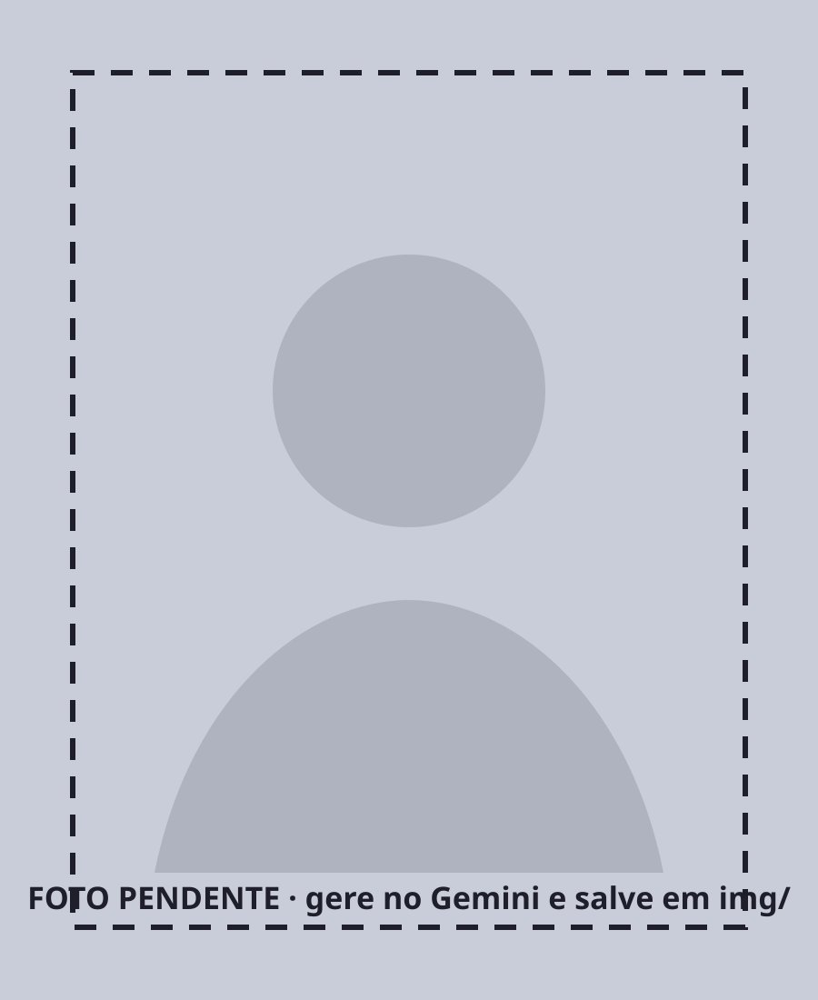

Cliente · out/2026
Cliente · out/2026
Subtítulo em uma frase: o que a audiência leva desta apresentação.
Área ou departamento · tipo da apresentação (interna, comercial, institucional)
O percurso
Quanto custa analisar uma pessoa hoje, quanto o contrato paga e o tamanho da distância.
Medido no motor atual, com três passes de modelos diferentes.
Cobre coleta, motor de análise e trilha web.
Cobertura e limite de erro não podem cair para caber no teto.
medição interna do motor, set/2026.
Vazão
O mês inteiro de conteúdo cabe em 24,1 horas de processamento. A exigência é de pico, não de fluxo contínuo.
Orçamento por pessoa
cascata de API medida em 28/08; trilha web é a linha menos estudada (até US$ 0,56).
A cascata, nível por nível
Lista todos os conteúdos de cada perfil, paginando até o fim. Não julga nada.
100%Baixa a mídia, escolhe quadros, transcreve a fala e lê o texto na tela.
100%Ordena por suspeita, em lote. Acima do limiar, sobe para julgamento.
100%Mesmo modelo, dobro da profundidade: 12 quadros e 90 s de áudio.
~35%Dois métodos independentes julgam. Divergência vira caso para humano.
~8%as fatias de 35% e 8% são estimativa de orçamento, não medição.
Revisão humana
Todo conteúdo sinalizado como risco passa por validação humana antes do relatório. De 19.891 itens decididos por revisor, 6.782 não confirmaram a marcação da IA.

O que a média esconde
Comentários alinhados, falando da mesma coisa na mesma direção. Narrativa saudável.
500 elogiando e 500 atacando dão média zero. O risco é altíssimo e a média escondeu.
O que sugerimos como próximos passos
Sobre os vídeos já em disco. Destrava o reorçamento da extração.
Confirmação no tier gratuito, depois o pedido de crédito para o piloto.
Incluindo decode integral e a entrada do YouTube.
Começando pelo embedding de texto, que agora tem instrumento.
contato@fkdcreators.com.br · (61) 9131-2875